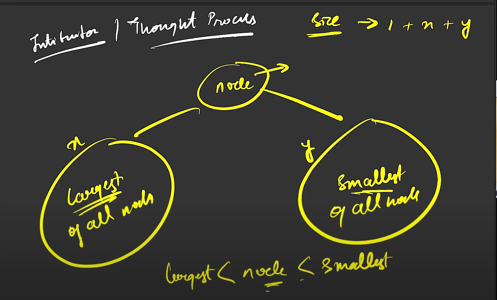

// C++ solution code goes here
#include <climits> // For INT_MIN and INT_MAX
#include <algorithm> // For max and min functions
struct Node {
int data;
Node *left;
Node *right;
Node(int val) {
data = val;
left = right = NULL;
}
};
class nodeValue {
public:
int max_val;
int min_val;
int size;
nodeValue() {
max_val = INT_MIN;
min_val = INT_MAX;
size = 0;
}
nodeValue(int x, int y, int s) {
max_val = x;
min_val = y;
size = s;
}
};
class Solution {
nodeValue findLargestBST(Node* root) {
if (!root)
return nodeValue();
auto leftSide = findLargestBST(root->left);
auto rightSide = findLargestBST(root->right);
if (leftSide.max_val < root->data && rightSide.min_val > root->data)
return nodeValue(std::max(root->data, rightSide.max_val),
std::min(root->data, leftSide.min_val),
leftSide.size + rightSide.size + 1);
else
return nodeValue(INT_MAX, INT_MIN, std::max(leftSide.size, rightSide.size));
}
public:
// Return the size of the largest sub-tree which is also a BST
int largestBst(Node *root) {
return findLargestBST(root).size;
}
};
